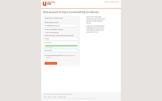

Ubuntu One
Dieser Artikel wurde für die folgenden Ubuntu-Versionen getestet:
Ubuntu 16.04 Xenial Xerus
Ubuntu 14.04 Trusty Tahr
Ubuntu One  (U1) war ursprünglich ein Cloud-Dienst, welcher eine Datenspeicherung in der Cloud gestattete. Dieser Dienst wurde im Jahre 2014 seitens Canonicals eingestellt. Lediglich die Funktion zur Authentifizierung (ursprünglich: "Ubuntu Single Sign On account") blieb erhalten. Dieser wird von diversen Internetseiten und seitens Canonical unter anderem für das Software-Center verwendet. Der Zugang ist für Nutzung der Dienste von Ubuntu Touch erforderlich, damit Programme installiert werden können. Mittels eines Smartphones oder Tablets kann die Zwei-Faktor-Authentifizierung verwendet werden, die zusätzliche Sicherheit bietet.
(U1) war ursprünglich ein Cloud-Dienst, welcher eine Datenspeicherung in der Cloud gestattete. Dieser Dienst wurde im Jahre 2014 seitens Canonicals eingestellt. Lediglich die Funktion zur Authentifizierung (ursprünglich: "Ubuntu Single Sign On account") blieb erhalten. Dieser wird von diversen Internetseiten und seitens Canonical unter anderem für das Software-Center verwendet. Der Zugang ist für Nutzung der Dienste von Ubuntu Touch erforderlich, damit Programme installiert werden können. Mittels eines Smartphones oder Tablets kann die Zwei-Faktor-Authentifizierung verwendet werden, die zusätzliche Sicherheit bietet.
Zugang¶
|  |
| Ubuntu One |
Um einen Zugang zu erstellen, ruft man die Seite von ubuntu.com auf und wählt den Punkt "I'm a new Ubuntu One user" an. Nach Eingabe einer gültigen E-Mail-Adresse und Eingabe der erforderlichen Daten sollte man sich die Nutzungsbedingungen durchlesen und bei Einverständnis das entsprechende Häkchen setzen.
Sofern man bereits einen Zugang hat, wählt man hier "I'm a returning user" aus und gibt die erforderlichen Zugangsdaten ein.
Konfiguration¶
Nach dem erfolgreichen Anmelden kann man über "Mein Konto" die Grundeinstellungen verändern, E-Mail-Adressen aktualisieren und Einsicht in die Dienste und Programme nehmen, welche Zugriff auf den Zugang haben. Die folgenden drei Menüpunkte stehen zur Verfügung:
| Konfiguration | |
| Menüpunkt | Beschreibung |
| "Persönliches Daten" | Benutzername, bevorzugte E-Mail-Adresse, welche mit dem Zugang verknüpft ist, Passwort ändern. Ebenfalls sind hier die Internetseiten aufgeführt, welche zur Authentifizierung auf U1 setzen (z.B. launchpad.net, wiki.ubuntu.com und ubuntuforums.org). |
| "Anwendungen" | Auflistung der Anwendungen, welche auf das Konto zugreifen. Das kann z.B. das Software-Center oder das Smartphone Ubuntu Touch sein. |
| "Account Activity" | Auflistung, wann (Datum/Uhrzeit) von welcher IP-Adresse mit welchem Browser auf die Seite zugegriffen wurde. |
Zwei-Faktor-Authentifizierung¶
Ubuntu One kann auch als Schritt 1 bei der Zwei-Faktor-Authentifizierung dienen. Allerdings befindet sich diese bei Ubuntu One noch in der Testphase ("offene Beta-Phase"). Details, wie man die Zwei-Faktor-Authentifizierung mit Ubuntu One nutzt, findet man auf der englischsprachigen Hilfeseite zu diesem Thema.
Um diese Art der Authentifizierung auf dem Smartphone zu nutzen, muss noch eine der folgenden Apps installiert sein:
| Beispielprogramme | |
| System(e) | Anwendung |
| Ubuntu Touch | Authenticator Authenticator |
| Android, Linux, BlackBerry, Windows, Mac OS X, iOS | Authy 2-Factor Authentication |
| Android, iOS | FreeOTP Authenticator |
| Android, iPhone, BlackBerry | Google Authenticator  |
- Erstellt mit Inyoka
-
 2004 – 2017 ubuntuusers.de • Einige Rechte vorbehalten
2004 – 2017 ubuntuusers.de • Einige Rechte vorbehalten
Lizenz • Kontakt • Datenschutz • Impressum • Serverstatus -
Serverhousing gespendet von